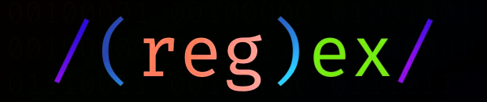
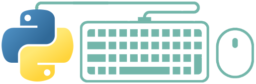
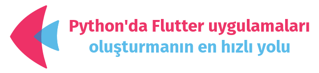

mhalil
mhalil
3D Modelleme, Animasyon, Render, Vektör - Raster Grafik İşleme ve Python ile Programlama konularına meraklı Açık Kaynak Hayranı bir Makine Mühendisi
3D Modelleme, Animasyon, Render, Vektör - Raster Grafik İşleme ve Python ile Programlama konularına meraklı Açık Kaynak Hayranı bir Makine Mühendisi
Bu bölümde Python ve Pandas, Polars, re (Regex, Düzenli ifadeler), PyAutoGUI, Flet, ...vb popüler bazı kütüphaneler hakkında türkçe eğitim notları paylaşacağım.

Python'a Giriş konusuna ait notları, FreeCAD için Python ile Komut Dosyası Oluşturma (Scripting) Eğitiminde paylaşmıştık. İlave olarak Python'ın en güçlü ve işlevsel kütüphanelerinden biri olan Pandas'a ait notları paylaşmaya devam ediyorum.
Pandas Kütüphanesi Notları sayfasına gitmek için tıklayın...

Düzenli ifadeler (Regular Expressions, kısaca "Regex" ya da "Regexp"), Python programlama dilinin en çetrefilli konularından biridir. Ama bütün zorluklarına rağmen programlama deneyimimizin bir noktasında mutlaka karşımıza çıkacak olan bu yapıyı öğrenmemizde büyük fayda var. Düzenli ifadeleri öğrendikten sonra, elle yapılması saatler sürecek bir işlemi saliseler içinde yapabildiğinizi gördüğünüzde eminim düzenli ifadelerin ne büyük bir nimet olduğunu siz de anlayacaksınız.
Düzenli İfadeler (re) kütüphanesi sayfasına gitmek için tıklayın...

PyAutoGUI, fare ve klavyeleri kontrol etmemizi sağlayan, böylece otomatik görevler yapan kodlar/botlar yazmamıza yardımcı olan güzel, faydalı bir Python kütüphanesidir/modülüdür.
PyAutoGUI kütüphanesi ile aşağıda listelenen işlemleri yapabiliriz;
PyAutoGUI kütüphanesi sayfasına gitmek için tıklayın...
Rust ve Python için Işık Hızında VeriÇerçevesi (DataFrame) Kütüphanesi.
Polars Nedir?
Polars, Rust programlama dilinde yazılmış ve temel olarak Apache Arrow’u kullanan bir DataFrame kütüphanesidir. Veri düzenleme alışkanlıklarını bilen Polars, okunabilir ve yüksek performanslı kod oluşturmanızı sağlayacak bir ifade dili kullanarak DataFrame'leri işlemek için tüm özellikleri içeren eksiksiz bir Python API 'ı sunar.
Polars kütüphanesi sayfasına gitmek için tıklayın...

Flet Nedir?
Flet, Front-End geliştirme deneyimi olmadan, en sevdiğiniz programlama dilinde, etkileşimli, çok kullanıcılı web, masaüstü ve mobil uygulamalar oluşturmaya izin veren bir çerçevedir.
Python'da Flutter uygulamaları oluşturmanın en hızlı yolu Flet kütüphanesini (modülünü) kullanmaktır. Flet Kütüphanesi, Geliştiricilerin Python'da kolayca, gerçek zamanlı web, mobil ve masaüstü uygulamaları oluşturmasına olanak tanır.
Flet kütüphanesi sayfasına gitmek için tıklayın...
Last updated: Cts 30 Aralık 2023